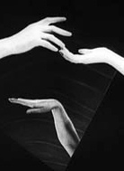
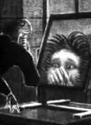

Clare will perform two new works in the 2015-16 concert season for piano and film, Hände, by Ken Hesketh, and The Nose, by Ed Hughes. These will be premiered at the 2015 Cornerstone Arts Festival of Liverpool Hope University on the 23 November, then performed at Cardiff University's concert series, and at the Cheltenham Festival in July 2016.
Ken has chosen Hände: Das Leben und die Liebe eines Zärtlichen Geschlechts, a visually arresting and surreal masterpiece by Stella F. Simon and Miklos Blandy, as the backdrop for his work. The music will reflect Ken's interest in the bizarre and eerie on celluloid and will be written specifically with Clare's pianism in mind.
The plot uses humans’ hands as “characters in a dance-inspired narrative exploring female experience and representation” (Jennifer Wild). As hands are used to communicate meaning and context, their shapes, groupings and physicality can be interpreted as a form of gestural hand or sign language. It is this interpretation that informs the musical score and role of the pianist in this work.
The Nose, by Ed Hughes, is based on a short film from 1963 by Alexander Alexeiff and Claire Parker, inspired by Nikolai Gogol's dream-like story of a government official whose nose goes missing. He later discovers it has grown a body and a career of its own. The film was made using a 'pinscreen', a 3x4 foot perforated board, into which a million headless steel pins are inserted. With oblique lighting, a complete black and white tonal range can be achieved, including many shades of grey. Alexeiff and Parker were interested in silent visual poetry, and were frequently stimulated by musical compositions as starting points for their work.
In this new musical response for solo piano Ed Hughes uses transparent harmonies to match the meditative and shimmering patterns of light in Alexeieff and Parker’s film; but also takes full advantage of the solo piano’s percussive qualities to capture the frequent absurdist and rhythmic moments in the film, which contribute strongly to its poignancy and humour.
Click on the images to see a selection of stills from each film and on the titles below to view each film on Youtube.
|  |  |
Hände |
The Nose |